Review · Round 6 · the chapters · the whole film
Chapter 6: Ten Thousand Motes, the draft
The latest draft, acted and painted, 4:42 at 12 drawings a second, over the same sound as the storyboard. One battle set: the camera moves among the giants as the screens heat through their colours. The motes are drawn small and many; the curtain of blankness is a dark, wavering veil.
Notes: pause anywhere, type, and press Enter (or Pin) to pin a note to that moment. They stay in this browser. Copy notes puts them on the clipboard as text, timed and with their shot, for the decision sheet or a message.
Notes
The shots
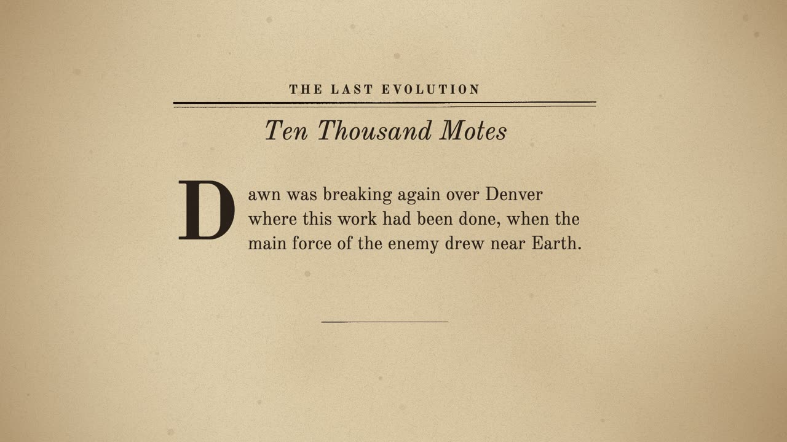
A The chapter's page 0:00–0:06
seenThe pulp page, Ten Thousand Motes, the opening words under a drop cap.
cameraa slow push
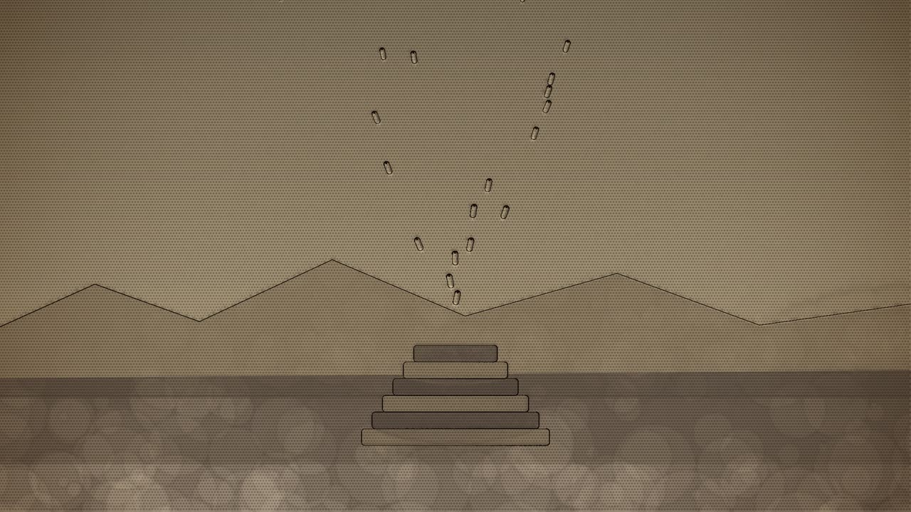
B Dawn over Denver 0:06–0:31
seenThe bare rock at dawn, the great machine the motes built; the sky paling.
cameratilts up with the stream into the sky
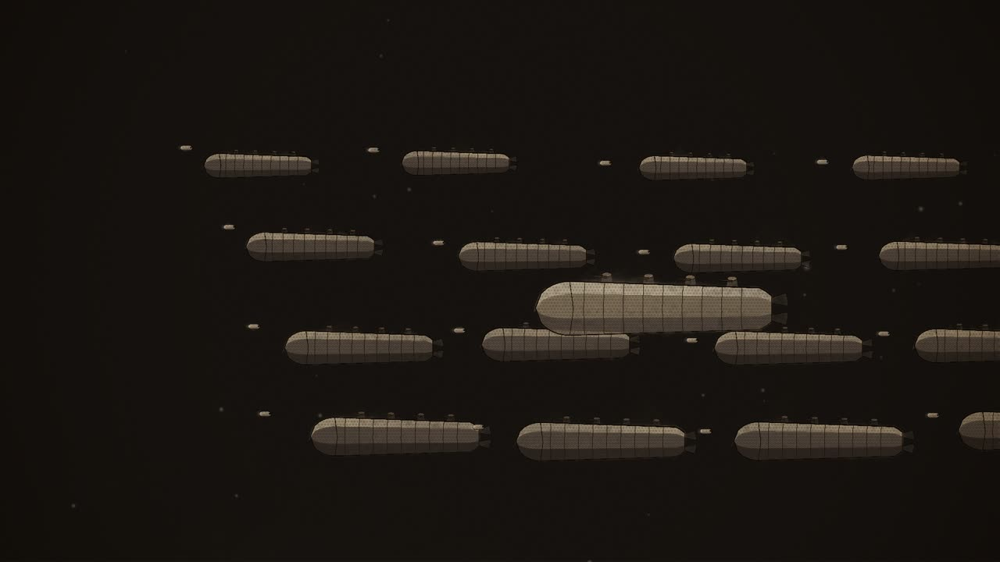
C Ten thousand giants 0:31–0:49
seenSpace under a far blue-white sun; rank behind rank of the giant ships, shining dully; the motes coming at them, darting.
cameraa slow move in among the ranks
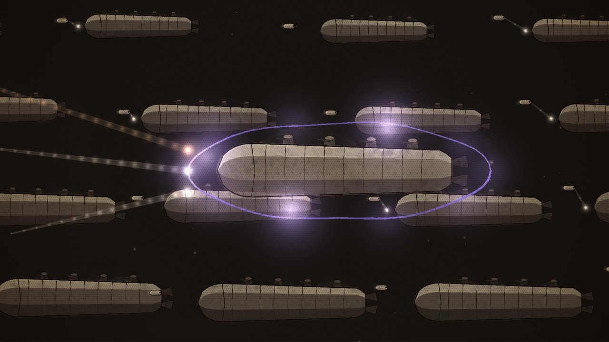
D Beams against screens 0:49–1:09
seenA giant's screen of force, and the beams striking it.
cameracloses on one giant
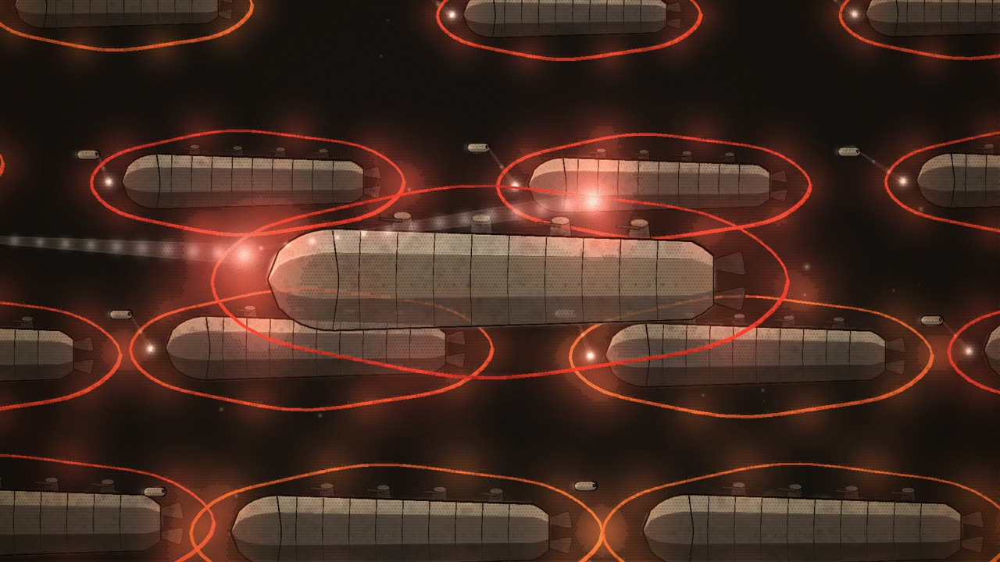
E Violet, blue, orange, red 1:09–1:33
seenThe giant's screen under fire.
cameraholds as the colours spread
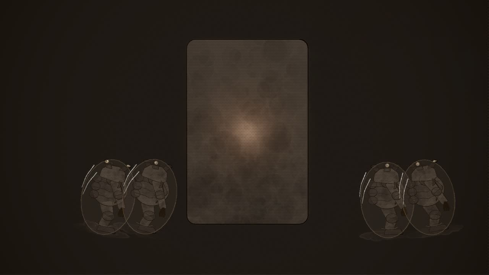
F Poor inefficient giants 1:33–2:19
seenA mote hanging motionless beside a giant; then inside the giant, horny-skinned men feeding a great generator that glows hotter.
camerafrom outside, a push through the hull to the men within
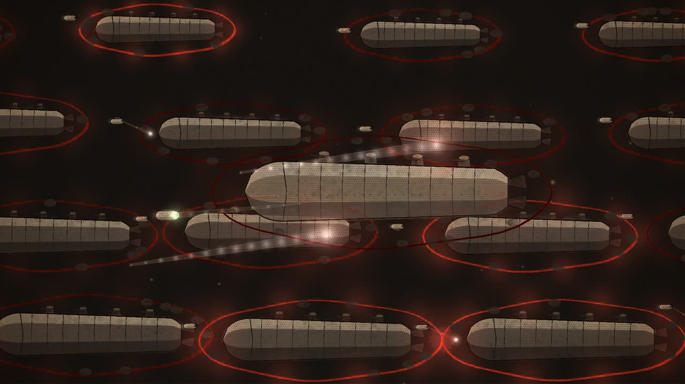
G The screens dying 2:19–2:49
seenThe giant's screen, orange dying to a dull red, with black flecks spreading.
camerapulls back
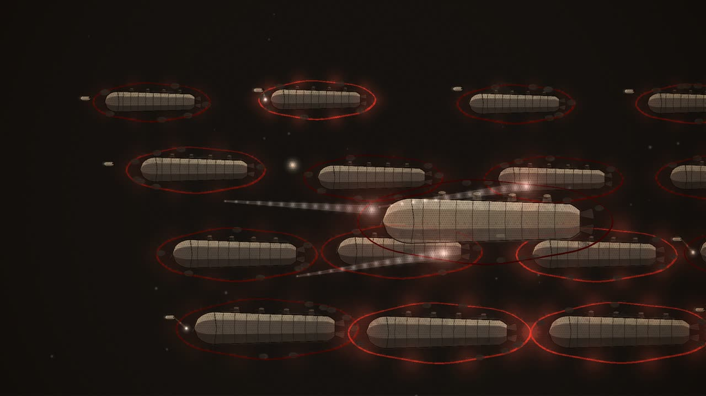
H Puffs of vapour 2:49–3:07
seenFree ships turning to help; motes caught by their beams.
cameraa slow pan across the fight
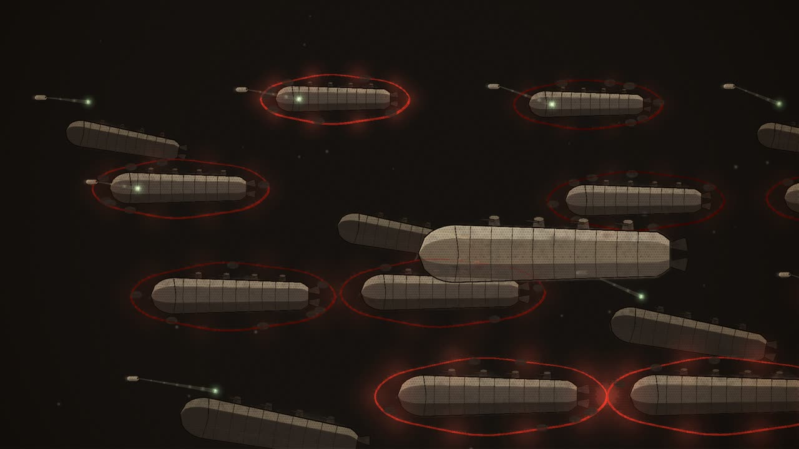
I The green ray, turned 3:07–3:52
seenThe motes; from each, a ray of green radiance into a giant.
cameraholds, then pulls back as the curtain spreads
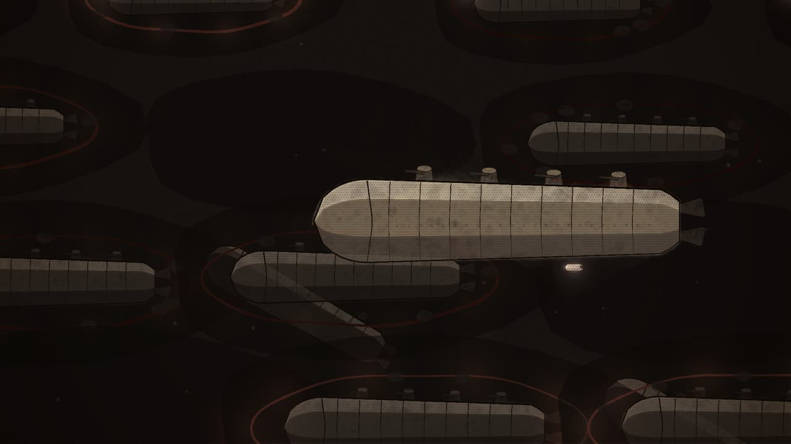
J The last charge 3:52–4:13
seenThe motes, their own screens flaming now.
camerarushes in with them; then the Denver hall's screens, blank
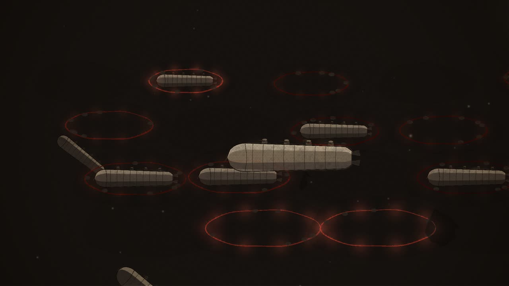
K Moving majestically on 4:13–4:23
seenThe fleet, the curtain fading, moving on in its ranks.
cameraa slow track with them
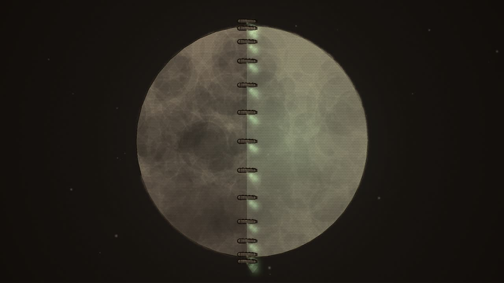
L Pole to pole 4:23–4:42
seenThe Earth from high above; a line of ships across it from pole to pole; pale green beams down from each.
cameraholds the Earth